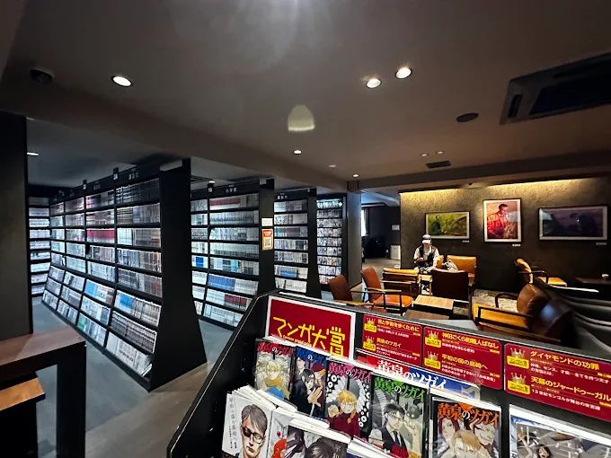
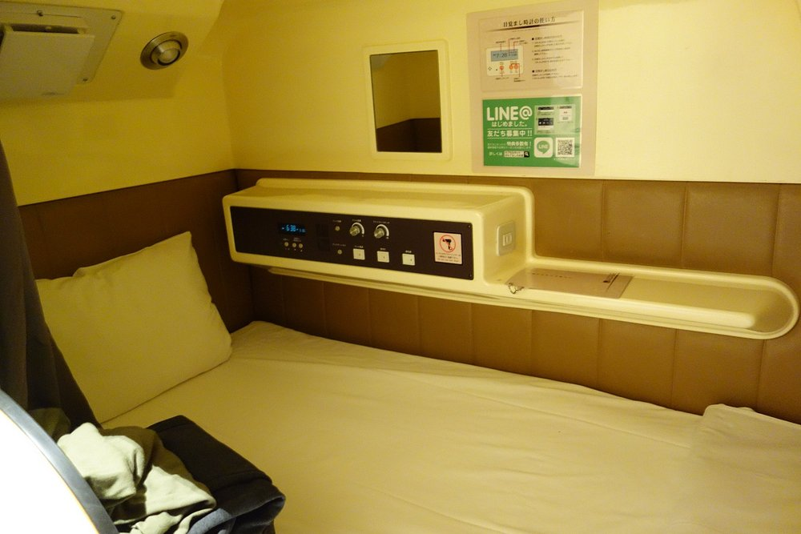
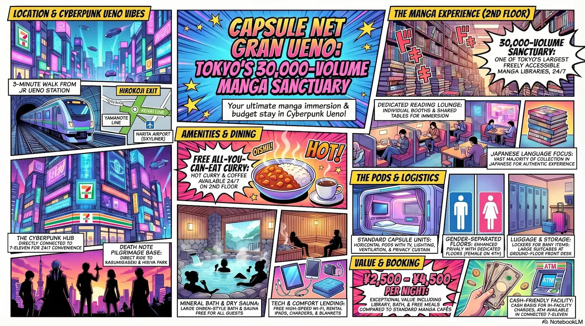
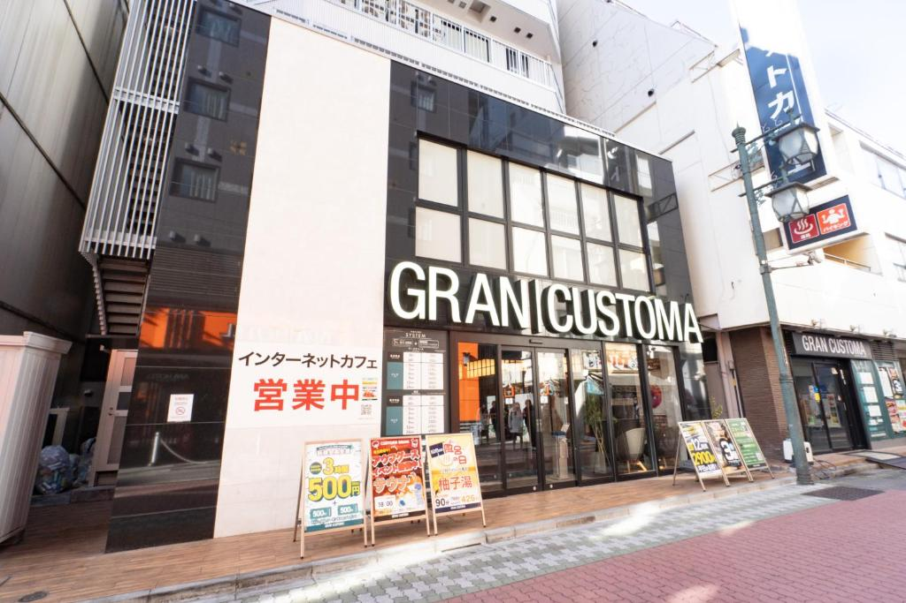
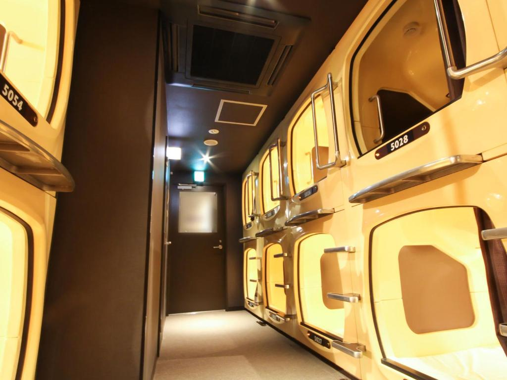
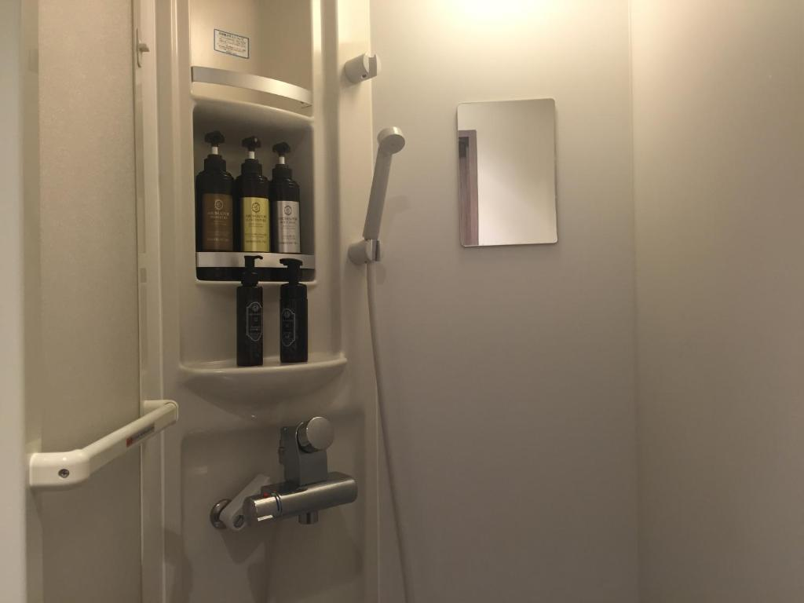
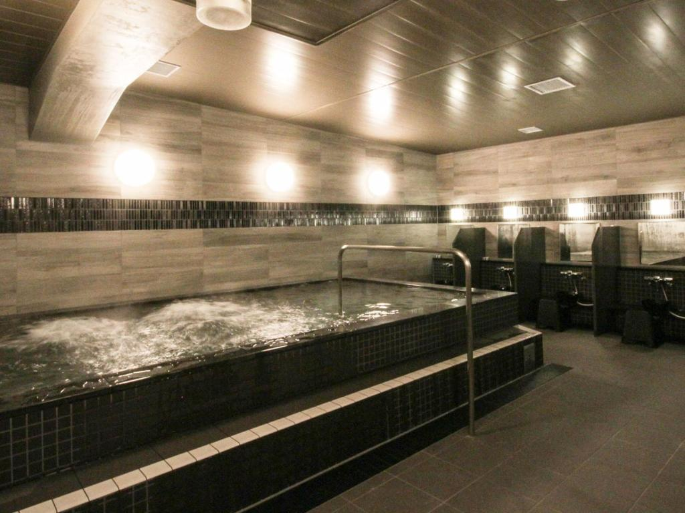
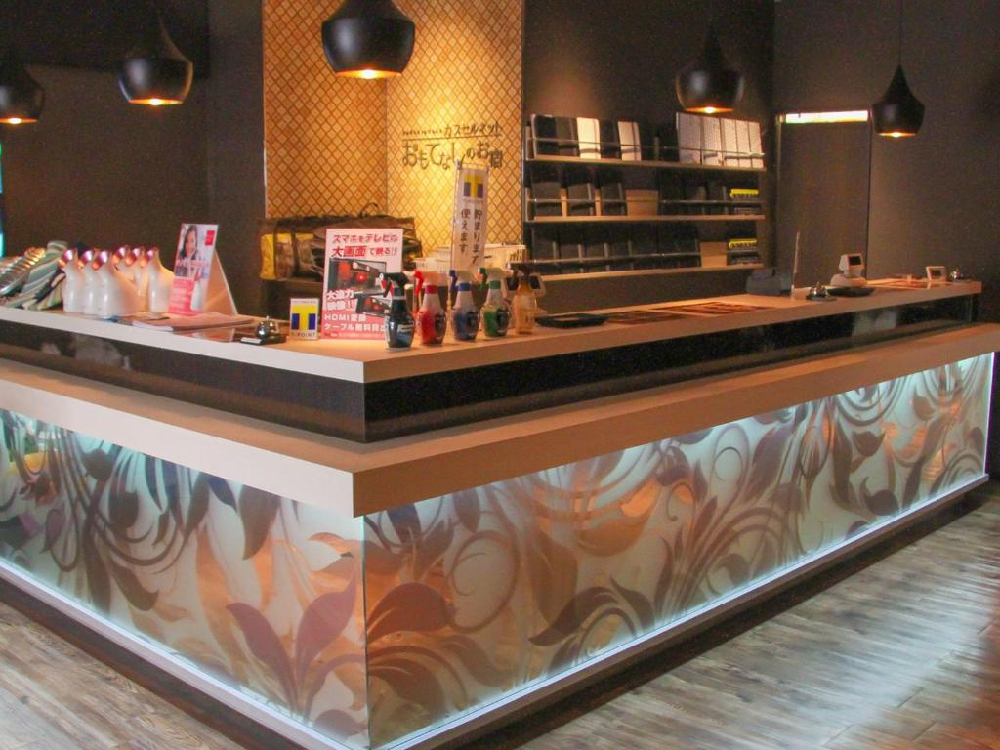
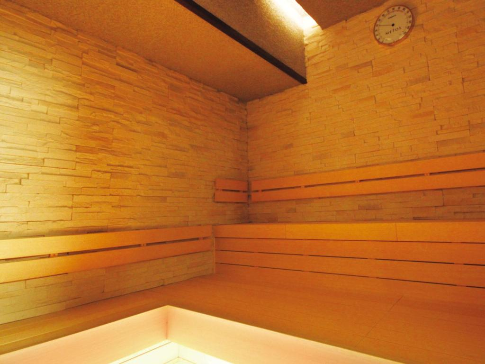

Capsule Net Gran — operating today as Gran Custama Ueno — occupies a position that very few Tokyo accommodations manage: it is simultaneously a fully functional capsule hotel with private sleeping pods, a public bath and sauna, and one of the largest manga libraries attached to any accommodation in Tokyo. Thirty thousand volumes. That is not a figure padded with magazines and light novels. That is thirty thousand manga, available to every guest, stacked across the shelves of the 2nd-floor lounge and reading room, accessible at any hour of the day or night. Three minutes on foot from Ueno Station. The price of a budget hotel room for a fraction of the floor space — and a fraction of the usual boredom.
The Manga Library: 30,000 Volumes, All Night Access
The reading area at Capsule Net Gran is not a shelf of popular titles near the reception desk. It is the central organizing feature of the 2nd floor — a dedicated lounge and reading room where the manga collection runs to approximately 30,000 volumes, making it one of the largest freely accessible manga libraries in any Tokyo accommodation context. The shelves line the walls and divide the space, creating the particular atmospheric density of a room that takes its books seriously.

The collection spans from nostalgia-era classic titles through currently running series, with enough volume depth that a guest staying multiple nights can work through substantial runs of longer series without running out of reading material. The lounge itself offers both shared tables and individual booth seating — a design that allows guests who want to read socially and those who want focused private reading to coexist comfortably. Free curry rice and coffee are available on this floor around the clock, which means the practical setup for a manga reading session is complete: food, drink, private booth, and thirty thousand books to choose from.
One thing to note clearly for international visitors: the collection is entirely in Japanese. This is standard across Japanese capsule hotel manga libraries, and Capsule Net Gran is no exception. Guests who can read Japanese will find the selection extraordinary. Guests who cannot will still find the atmosphere of the reading room compelling and worth spending time in, but the content itself requires Japanese literacy. A handful of manga titles in the lounge may exist in other languages depending on current stock, but this should not be relied upon.
The 2nd floor also contains the property's dining area and the free amenities counter — a genuinely useful feature where guests can borrow hair dryers, phone chargers, electronic blankets, iPads, and other small items without charge. The floor functions as the social and recreational center of the building, distinct from the sleeping floors above.
Location: Death Note's Tokyo — And What Ueno Means for the Pilgrimage
Capsule Net Gran sits at 6-8-20 Ueno, Taito-ku — three minutes' walk from JR Ueno Station's Hirokoji exit, in a building marked by a ground-floor 7-Eleven. The location is one of the best-connected in Tokyo: five transit lines converge at Ueno Station, including the JR Yamanote and Keihin-Tohoku Lines, the Tokyo Metro Ginza and Hibiya Lines, and the Keisei Line, which provides the fastest surface connection from Narita Airport. Akihabara is two stops by JR from here. The Ameyoko Market — one of Tokyo's most kinetic street markets — is two minutes' walk.
For Death Note readers, the Ueno district carries specific resonance. The series' geography is Tokyo's geography, drawn with documentary precision — and Ueno, with its National Police Agency connections, its institutional density, and its proximity to the Kasumigaseki government district that anchors the Kira investigation storyline, positions this hotel within immediate reach of the pilgrimage's central chapters. The NPA headquarters at Kasumigaseki — where Soichiro Yagami leads the task force in episodes 6 and 7 — is one direct Hibiya Line ride from Ueno Station. The Hibiya Park fountain where Light writes Naomi Misora's name in episode 8 is at the same stop. HotelManga's complete Death Note location guide covers all nine pilgrimage sites, but the logistical point is this: Capsule Net Gran gives you a manga library to return to at the end of every pilgrimage day, and one of the best transit positions in the city to reach every site in the series from.
Beyond the Death Note connection, Ueno is one of Tokyo's most textured neighborhoods for extended stays. Ueno Park — cherry blossom epicenter for the entire city each spring — is a short walk. The Tokyo National Museum, home to one of the world's great collections of Japanese art and artifacts, is within the park complex. Sensoji Temple in Asakusa is fifteen minutes by Ginza Line. The overall geography gives Capsule Net Gran a cultural density that most budget Tokyo accommodations simply cannot match by location alone.
The Capsules: What the Pods Are Actually Like
The sleeping pods at Capsule Net Gran are the standard configuration of the Japanese capsule format — private horizontal sleeping units with individual ventilation, a small television, internal lighting, and a curtain or screen for privacy. They are not locked rooms. They are not soundproofed. They are the original capsule hotel concept, executed cleanly and maintained consistently: a private sleeping space stacked with others, designed for sleep and storage rather than waking life.

The property operates gender-separated floors — female guests on the 4th floor, male guests on separate floors — which provides a baseline level of security and privacy that solo female travelers specifically note as reassuring across review platforms. Each floor has shower rooms, toilets, and a coin laundry. Lockers are provided for valuables and clothing; larger luggage is stored at the front desk on the ground floor rather than in the capsule area, which means every time you want to access a large bag you need to make a trip downstairs. This is the most consistently mentioned friction point in guest reviews, and it is worth planning around by packing a separate small bag with your immediate essentials before checking in.
The capsules themselves include a television and basic in-pod amenities. In-pod ventilation is adequate but draws some criticism from guests who run warm — a consistent theme in reviews from summer visitors in particular. The space is sufficient for sleeping and minimal personal storage, and nothing more. Guests who are claustrophobic or who need to spread out during waking hours should plan to spend their waking time on the 2nd floor lounge rather than in the capsule.
The Public Bath and Sauna
Capsule Net Gran includes a large public bath and sauna, both free to all guests — an amenity that distinguishes it from the majority of Tokyo's budget accommodation options at a similar price point. The bath is described across multiple reviews as an onsen-style mineral bath rather than a standard heated communal tub, operating with mineral-enriched water rather than plain hot water. The sauna is dry and functional. Both are gender-separated and accessible to all guests throughout the day.
After a full day of walking Tokyo — Ueno Park, Akihabara, Asakusa, or the Death Note pilgrimage circuit — returning to a genuine hot bath before the manga reading session is a combination that reviews consistently cite as one of the property's strongest practical advantages. This is the capsule hotel equivalent of the onsen ryokan loop: soak, read, sleep. Budget version, urban execution, thirty thousand volumes instead of mountain silence.
Guests with visible tattoos should note that the public bath carries the standard Japanese policy of restricted access for visible tattoos. This applies to the communal bathing area; private shower rooms are available on each floor as an alternative.
Food: Free Curry Rice and the 7-Eleven Downstairs
Food at Capsule Net Gran operates on a logic that suits the budget hotel format remarkably well. All-you-can-eat curry rice is available on the 2nd floor at no charge throughout the night — a detail that shows up in almost every positive review and that provides a genuine practical answer to the question of late-night food in Ueno. It is basic, hot, and free. The coffee is also free. One complimentary drink is typically included per guest per stay.
The ground floor 7-Eleven is connected directly to the building, which means breakfast, snacks, drinks, convenience meals, and any forgotten toiletries are immediately accessible without going outdoors. Ueno's surrounding streets have a high density of ramen shops, izakaya, and restaurants within the immediate block — the Ameyoko Market area two minutes away includes a concentrated strip of affordable dining options that remains active well into the evening. The property does not serve breakfast buffet as a standard service; the combination of free curry, free coffee, the 7-Eleven, and the surrounding street options is sufficient for most guests' practical food needs.
Cleanliness
Cleanliness at Capsule Net Gran receives consistently strong marks across platforms, with specific praise for the bathroom facilities and the 2nd-floor common areas. The shower rooms are described as immaculately maintained — one reviewer characterized the experience as having a private hotel bathroom despite the shared facility context. The capsule sleeping areas are cleaned between guests. The 2nd-floor lounge and dining area are kept tidy throughout operating hours. The one meaningful exception in the review record involves a small number of reports of dirty sleeping spaces and, in at least one case, hair found around the futon — outlier complaints against a much larger body of positive feedback, but worth noting honestly for guests with high cleanliness standards.

Value
Capsule Net Gran is priced at the lower end of the Tokyo budget accommodation range — typically ¥2,500–¥4,500 per night depending on season and booking timing — which makes the inclusion of a 30,000-volume manga library, a public bath and sauna, free curry rice, free coffee, free amenity lending, and free Wi-Fi a genuinely remarkable value calculation. No other accommodation in Tokyo at this price point offers this combination of features. The nearest comparable experiences — dedicated manga cafés — do not offer private sleeping pods or public bathing. The Manga Art Hotel, which is conceptually similar, carries a higher price point and a much smaller collection.
The honest caveat: you are staying in a capsule, not a hotel room. The sleeping space is minimal. The luggage system requires patience. The ventilation in the pods can run warm. For guests whose primary needs are a clean sleeping space and access to a world-class manga collection in a well-connected Tokyo neighborhood, the value is exceptional. For guests who need a desk, space to spread out, luggage at hand, or silence, the experience will feel constrained regardless of price.
Practical Information
- Check-in: 4:00 PM Check-out: 10:00 AM
- Price Range: ¥2,500–¥4,500 / night (seasonal variation)
- Guests: Male and female floors — gender-separated throughout
- Manga library: ~30,000 volumes (Japanese only) — 2nd floor, 24-hour access
- Public bath & sauna: Free for all guests — gender-separated, mineral-enriched water
- Tattoo policy: Visible tattoos restricted in public bath — private showers available on each floor
- Free amenities: Curry rice, coffee, hair dryers, phone chargers, electronic blankets, iPads
- Luggage: Large bags stored at front desk — bring a small bag with daily essentials
- Nearest station: Ueno Station (Hirokoji Exit) — 3 min walk
- Wi-Fi: Free throughout the property
- Convenience store: 7-Eleven connected to ground floor
Getting There
From Ueno Station (JR)
- Hirokoji Exit → 3-minute walk
- JR Yamanote Line, Keihin-Tohoku Line
- Look for the ground-floor 7-Eleven
- Building has no English signage outside
From Ueno Station (Metro)
- Tokyo Metro Ginza & Hibiya Lines
- Toei Oedo Line: Ueno-Okachimachi Stn
- 3–5 minute walk from all exits
- Direct access to Kasumigaseki (Death Note)
From Narita Airport
- Keisei Skyliner to Keisei-Ueno: ~40 min
- Keisei-Ueno Station → 3-min walk
- Fastest airport-to-door route in Tokyo
- No transfers required from Narita
From Haneda Airport
- Keikyu Line to Ueno (transfer): ~45 min
- Tokyo Monorail + JR Yamanote: ~50 min
- Taxi: approx. ¥5,000–¥7,000
- Narita route is simpler from this property
Beyond Manga and Capsules: An Honest Assessment
Strip away the manga library and the Death Note geography, and Capsule Net Gran is a clean, well-located, budget-priced capsule hotel with reliable operations and a functional set of free amenities. It is not a luxury stay. The sleeping pods are small. The luggage system is inconvenient. The English-language staff capacity is limited, though a translation device is available at the front desk. The pod ventilation complaints are real. These are the honest constraints of the format, and they apply here as they apply across capsule hotels generally.
What makes this specific property stand out within its category — and within Tokyo accommodation broadly — is the manga library. Thirty thousand volumes is not a marketing number. It is a genuinely extraordinary collection for a facility at this price point, and it transforms the stay from a budget sleep option into something closer to a media immersion experience. If you are the kind of traveler who would genuinely spend three hours reading manga in a lounge at midnight after a bath, Capsule Net Gran is close to ideal. If you are the kind who would walk past the bookshelves without stopping, there is no reason to pay a premium for the pods when more comfortable beds exist at similar prices nearby.
Tips for Getting the Most Out of Your Stay
Pack a small day bag with everything you need for sleeping and the next morning's essentials — toiletries, pajamas, phone charger, one day's clothes. Leave your main luggage at the front desk. This eliminates the most commonly reported inconvenience of the property and makes the pod experience significantly more comfortable.
Arrive at the 2nd-floor reading room in the first hour after check-in before the evening crowd builds. The lounge is most pleasant in the mid-afternoon, when you can browse the shelves at your own pace and claim a good reading booth. The curry rice replenishes throughout the night, so there is no need to rush the food.
If you are running the Death Note pilgrimage: plan the Kasumigaseki and Hibiya Park stops for a weekday. Both sites are most atmospheric during working hours when the government district is populated. Take the Hibiya Line direct from Ueno — it stops at Kasumigaseki without transfers. Return to the hotel for the bath and manga session after dark, when the 2nd floor is quietest and the reading experience is at its best.
Bring cash. The property operates on a cash basis for in-facility charges, and the ground-floor 7-Eleven has an ATM if you need to top up. It is not a problem, but it is worth knowing before you arrive.
Hotel Directory
Capsule Net Gran Ueno (Gran Custama Ueno)
Photo Gallery

Photo 1
Photo 2
Photo 3'">
Photo 4'">
Photo 5'">
Photo 6'">Check In to 30,000 Volumes
Capsule pods fill fast on weekends — book ahead.